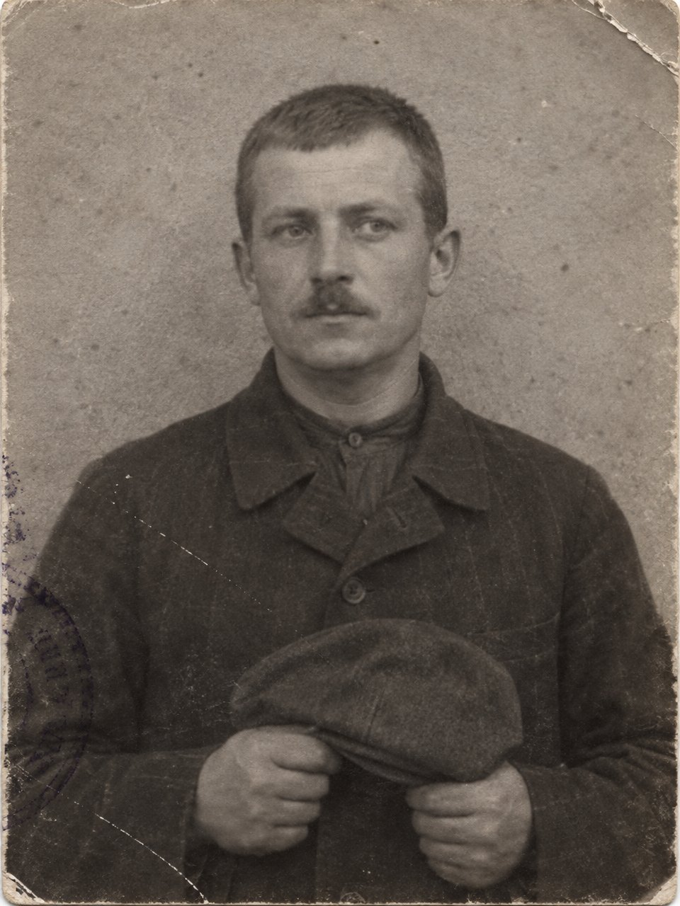

Караул

От Метехского замка до здания суда было сорок минут ходу, если вести арестантов шагом и не давать им останавливаться у лавок. Ковалёв водил их два года и знал эту дорогу до последней выбоины: вниз от замка по крутому спуску, через Метехский мост, где внизу шумела Кура и где арестанты всегда замедляли шаг, чтобы посмотреть на воду, потом вверх, через майдан, мимо серных бань, мимо армянских рядов, где пахло кожей и кофе, и дальше в город. Он знал, где у моста стоит нищий без ноги, где в рядах торгует медник, у которого жена ходит в синем платке, где у бань дежурит городовой, который в среду бывает пьян. Он знал это не потому, что запоминал. Это само в нём оставалось, как остаётся вода в песке.
Он был младший унтер-офицер конвойной команды, двадцати пяти лет, тифлисский уроженец, сын отставного солдата, среднего роста, с густыми рыжеватыми усами. Усы он отпустил в первый же месяц службы, как только позволили. Под ними, от верхней губы к ноздре, шёл старый рубец: он родился с заячьей губой, и в шесть лет военный хирург в госпитале, куда отец привёл его потому, что солдатских детей там резали даром, зашил её, как умел. Губу зашили, а рубец остался, и верхняя губа с левой стороны так и осталась чуть подтянутой, будто он всё время собирается усмехнуться и раздумывает. Мальчишки на улице звали его Зайцем, до самой службы. После усов так его не звал никто.
Ротный однажды сказал про него, что это лицо можно забыть, пока на него смотришь. Ротный сказал это в шутку, а Ковалёв запомнил и подумал, что лучшего про него ещё никто не говорил.
Он вырос в Нахаловке, за вокзалом, где жили железнодорожники, отставные солдаты и все, кому в городе не хватило места. Улиц там не было, были проходы между заборами. Дома лепили из чего придётся: из шпал, из ящиков, из глины с соломой, и полиция их ломала, а их строили снова, оттого слобода и называлась так. Отец его, отставной солдат, сапожничал в будке у вокзала и пил по субботам, но не до беспамятства, а ровно столько, чтобы в воскресенье не идти в церковь. Мать умерла, когда Ивану было девять. После этого он научился двум делам: молчать и стоять. Молчать было легче, чем говорить: когда он говорил, на него смотрели в рот. Отец, когда пил, бывал разговорчив и не любил, чтобы ему отвечали. Ваня стоял у стены и молчал, и отец забывал, что он там стоит. Ваня слушал. Потом отец засыпал, а Ваня знал всё, что отец говорил, и кому, и про кого.
В конвойной команде это умение пригодилось сразу. Конвойный стоит. Он стоит у дверей камеры, когда приходят свидания. Стоит в коридоре суда, когда идёт заседание. Стоит у арестантской повозки, когда ждут, пока выпишут бумагу. Другие конвойные переминались, курили, болтали, засыпали стоя, как лошади, и их за это бранили. Ковалёв стоял по шесть часов, не меняя ноги. Ему это ничего не стоило. Он стоял и смотрел, и всё, что видел, оставалось в нём, как вода в песке.
⁂
Ротмистр пришёл в замок в марте, в среду.
Ковалёв не знал тогда, что он ротмистр. Он видел человека в штатском, в хорошем сером пальто и мягкой шляпе, с тростью в руке. Трость он нёс, а не опирался на неё: держал за середину, как держат зонт, когда нет дождя. Лицо у него было гладкое, с мягким подбородком, и ничего особенного в этом лице не было, кроме того, что оно ничего не выражало. Начальник замка вышел встречать его сам, и Ковалёв понял, что человек этот из тех, перед кем начальник замка выходит сам.
Человек пришёл к политическим. Их сидело в тот год в замке с десяток: студенты, двое наборщиков из подпольной типографии, один пожилой учитель, который всё время просил бумаги, чтобы писать, и ему не давали. Человек в сером пальто разговаривал с ними по одному, в канцелярии, и Ковалёв водил их туда и обратно, и стоял у дверей, пока они разговаривали. Слов было не слышно. Только иногда ровный голос, без подъёмов, и потом тишина, долгая, такая, в которой арестант думает. Ковалёв заметил, что арестанты выходили из канцелярии не такими, какими входили: не испуганными, а задумчивыми.
Человек приходил ещё четыре раза, в разные дни. На пятый раз, выходя из канцелярии, он остановился у дверей, где стоял Ковалёв, и посмотрел на него. Посмотрел внимательно, сверху вниз, как смотрят на вещь, которую видели много раз и ни разу не заметили. На усы он не посмотрел. Ковалёв давно привык, что люди, разговаривая с ним, первым делом смотрят на усы и под усы. Этот смотрел в глаза и, кажется, не видел, что у него есть рот.
— Вы здесь всегда стоите, унтер-офицер?
— Так точно, ваше благородие.
— И на прошлой неделе стояли?
— Так точно.
— Кто приходил на прошлой неделе к Мартиросову? К наборщику.
Ковалёв ответил. Он ответил, не задумываясь, потому что задумываться было не о чем: всё лежало в нём, только достать. Во вторник приходила мать, пожилая, в чёрном, с корзинкой, в корзинке была лепёшка, пара белья и луковица, луковицу надзиратель не пропустил. В четверг приходила сестра, или она назвалась сестрой, молодая, стриженая, в очках, хромала на левую ногу, но не всегда, а только когда помнила об этом. С ней был студент, который ждал во дворе и курил, не докуривая, и бросал окурки в одно место, у колеса повозки. В субботу не приходил никто, но во двор заглядывал человек в форменной фуражке железнодорожника и спрашивал у привратника, есть ли свидания в понедельник.
Человек в сером пальто слушал, не перебивая. Потом спросил:
— Как вас зовут?
— Ковалёв, ваше благородие. Иван.
— По батюшке?
— Никифорович.
— Сколько вам служить, Иван Никитич?
Ковалёв помолчал полсекунды.
— До осени, ваше благородие.
— Осенью приходите ко мне, — сказал человек в сером пальто. — Спросите в управлении ротмистра Вележева. Или нет, не в управлении. — Он назвал улицу и дом. — Там нет вывески. Позвоните два раза.
Он кивнул, как кивают знакомым на улице, и пошёл по коридору, неся трость в руке.
Ковалёв стоял у дверей и думал не о том, что его позвали, а о том, что его назвали Никитичем. Он мог поправить. Это было бы легко, и ротмистр, наверное, сказал бы «извините» и запомнил бы. Ковалёв понял, что именно поэтому и не поправил. Поправить начальство — значит, чтобы тебя запомнили. А тому, кого запомнили, потом всегда что-нибудь припоминают.
Он не думал этого словами. Словами он подумал это гораздо позже. Тогда он просто стоял у дверей и чувствовал, что поступил правильно.
⁂
В октябре он вышел в запас и позвонил два раза в дом без вывески.
Дом был обыкновенный, двухэтажный, с балконом на втором этаже и с глухими воротами. Внутри пахло сургучом и табаком. Ротмистр принял его в кабинете, где на столе не было ни одной бумаги, только чернильница и стакан чаю, и разговаривал с ним полчаса. Спрашивал про отца, про Нахаловку, про конвойную команду, про то, пьёт ли он и сколько. Ковалёв ответил, что пьёт, если угощают, и не больше рюмки. Это было правдой. Ротмистр кивнул и сказал, что жалованье тридцать рублей и что за это придётся много ходить.
Учили его потом другие: старший филёр, кривой на один глаз, который пятнадцать лет ходил за людьми по Тифлису и знал в лицо всех извозчиков на Головинском. Он учил, как ходить в толпе, чтобы тебя заслоняли. Как переходить на другую сторону, не глядя на того, за кем идёшь. Как менять шапку на картуз за углом и снимать пиджак, чтобы со спины ты стал другим. Как писать дневник наблюдения: время, место, приметы, с кем говорил, сколько пробыл, куда вошёл и откуда вышел, и ничего от себя.
Но раз в неделю, по пятницам, ротмистр собирал их у себя, человек пять-шесть, молодых, и говорил с ними сам. Он говорил не о том, как ходить. Он говорил о том, что делать с тем, что увидел.
Он стоял у окна, держа трость поперёк, за середину, и говорил ровно, без подъёмов, тем же голосом, каким говорил с арестантами в канцелярии, и Ковалёв понимал теперь, отчего арестанты выходили от него задумчивыми.
— Агента не жгут, — говорил ротмистр. — Если он принёс вам сведения, вы не идёте брать людей наутро. Наутро они сосчитают, кто знал вчера, и вашего агента не станет. Вы ждёте два дня, три, пока о деле узнают ещё двое-трое, и сосчитать будет нельзя. Агент — это не человек, который вам однажды что-то сказал. Это человек, который будет вам говорить годами. Его берегут, как берегут колодец.
И ещё:
— Если вы сидите в квартире и ждёте, квартира должна жить. Часы заведены. Цветы политы. Кошка накормлена. Тот, кто придёт, посмотрит сначала не на вас, а на часы. Если часы стоят, он уйдёт.
И ещё:
— Пожар смотрят все. А вы смотрите на тех, кто смотрит пожар. Тот, кто поджёг, всегда приходит посмотреть.
И ещё, однажды, вскользь, когда кто-то из молодых спросил, как увидеть, что за тобой идут, если обернуться нельзя:
— Витрина. Лучшего зеркала нет. Остановитесь, посмотрите на шляпы, а потом посмотрите сквозь шляпы.
Ковалёв слушал. Он слушал, как когда-то слушал отца у стены, и всё, что ротмистр говорил, оставалось в нём. Он заметил, что другие запоминают не всё: кто-то записывал, потом терял записи, кто-то кивал и не слушал. Ротмистр этого не замечал. Он говорил к окну, к улице, к своей трости, и смотрел поверх голов. Ковалёв понял это на второй пятнице и проверил на третьей: он сел в самый конец, к двери, и не сказал ни слова, и ротмистр за весь вечер ни разу на него не посмотрел. На четвёртой пятнице он сел у самого окна, рядом с ротмистром, и тот не посмотрел на него тоже. Он смотрел в окно.
Умный человек, думал Ковалёв. Умнее всех, кого он видел. Он знает, как устроен человек, который сидит в камере, и человек, который пишет прокламацию, и человек, который предаёт своих за двадцать пять рублей. Он знает, как сделать, чтобы тебе говорили. Только тех, кто ходит за людьми по его приказу, он не видит. Для него они как трость: держат, пока голова работает.
Ковалёв не обиделся. Он подумал, что так даже лучше.
⁂
Купец пришёл к нему сам, в декабре.
Это был армянин из рядов на майдане, торговавший сукном, немолодой, тяжёлый, с тяжёлыми золотыми часами на цепочке. Сын у него учился в реальном училище и ходил в кружок. Ковалёв знал это, потому что третью неделю ходил за кружком: за двумя студентами, которые его вели, и за всеми, кто туда ходил. Ходил и за купеческим сыном, тонким, с первыми усиками, который в кружке больше молчал и краснел. Ковалёв записывал в дневник, что сын суконщика такого-то вошёл в дом такой-то в семь часов и вышел в десять. Ротмистр читал дневник и ничего не говорил.
Как купец узнал, кто за его сыном ходит, Ковалёв так и не понял. Может быть, просто увидел его три раза на одной улице. Купцы на майдане видели всё, что касалось их денег, а сын был тоже деньги. Купец подошёл к нему у бань, вечером, когда Ковалёв сдал смену, и заговорил по-армянски, а потом, увидев, что Ковалёв понимает, но отвечает по-русски, перешёл на русский. Он не просил ничего прямо. Он сказал, что сын у него глупый, но хороший, что глупость с годами проходит, если не сломать человеку жизнь в шестнадцать лет. Что он, купец, хотел бы знать заранее, если к ним придут. Только знать, ничего больше. Чтобы сын ночевал в эту ночь у дяди в Ортачалах. Чтобы в доме не было ничего, кроме сукна. И что он, купец, умеет быть благодарным.
Ковалёв ничего не ответил. Купец отдал ему кошелёк и ушёл.
В кошельке было пятьдесят рублей. Ковалёв получал тридцать в месяц.
Обыск назначили через десять дней. Кружок брали весь, ночью, и в том числе дом суконщика. Ковалёв узнал об этом накануне вечером, потому что ему велели стоять у дома суконщика с полуночи и смотреть, не выйдет ли кто. В девятом часу он прошёл по майдану мимо суконной лавки и, не останавливаясь, сказал в открытую дверь одно слово: «Сегодня». Купец за прилавком не поднял головы.
Ночью он стоял напротив дома, как велели, и видел, как пришли жандармы с понятыми и дворником, и как зажгли во всех окнах свет, и как через два часа вышли с пустыми руками. Сына в доме не было. Был дядя в Ортачалах, к которому мальчик, по словам отца, ушёл ещё днём на именины. Сукна было много. Больше ничего не было.
Утром ротмистр читал рапорт об обыске. Ковалёв стоял у двери кабинета, потому что принёс свой дневник за ночь, и видел, как ротмистр дочитал, отложил бумагу и сказал адъютанту, не поднимая глаз:
— Значит, у суконщика ничего и не было. Признаюсь, я так и думал. Мальчишка там случайный.
Он взял дневник Ковалёва, пробежал глазами: «С 12 ч. ночи до 5 ч. утра у дома такого-то. Никто не выходил». Расписался внизу и отдал, не взглянув на того, кто его принёс.
Ковалёв вышел на улицу. Было холодно и солнечно, и над Курой стоял туман, а сквозь туман, наверху, на скале, желтел Метехский замок, где он два года стоял у дверей. Он пошёл домой, в Нахаловку, пешком, через весь город. Дома отец спал после ночной выпивки. Ковалёв достал из-под половицы жестянку из-под чая, в которой лежали его деньги, все, что он скопил за два года службы, — четырнадцать рублей, — и положил к ним пятьдесят купеческих. Пересчитал. Положил жестянку обратно и прибил половицу.
Он подумал, что ротмистр сказал правду: мальчишка там был случайный, и ничего страшного не случилось бы, если бы его взяли. Посидел бы месяц и вышел. Ротмистр знал людей. Он ошибся только в одном: он не знал, что в ту ночь у дома стоял человек, который сказал суконщику «сегодня». Он не знал этого, потому что не видел этого человека. Он вообще его не видел.
Ковалёв лёг на лавку у стены, под ходиками, и долго лежал, глядя в потолок. Он не чувствовал ни страха, ни стыда. Он чувствовал то же, что чувствовал мальчиком, когда отец засыпал за столом, а он стоял у стены и знал всё, что тот говорил, и отец не знал, что он знает.
Ходики над ним шли. Он подумал, что их надо бы завести на ночь, и завёл.